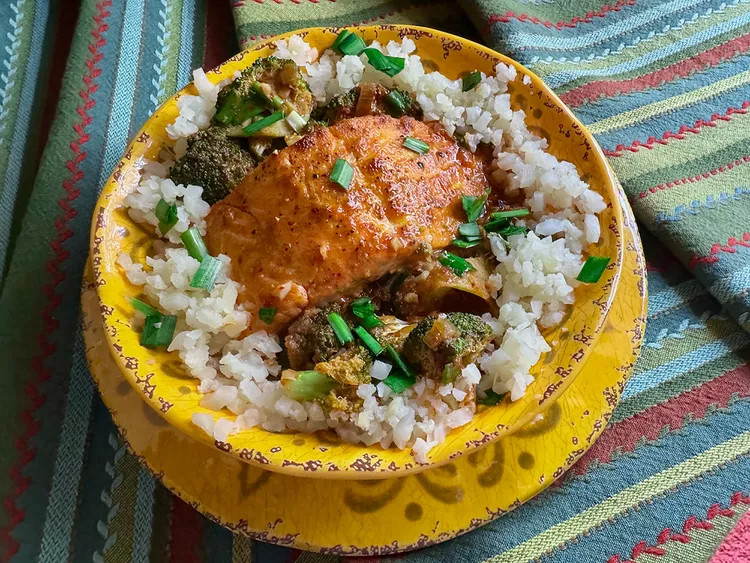

Salmon Curry

Description
Typical Indian dish.
Ingredients
- 4 (6 ounce) salmon filets
- 2 tablespoons neutral-flavored cooking oil, divided
- 1 tablespoon curry powder, or to taste
- salt and freshly ground black pepper to taste
- 1 tablespoon honey
- 3 tablespoons unsalted butter
- 1/2 cup chopped shallots
- 1 tablespoon minced garlic
- 1 tablespoon minced fresh ginger
- 1 pinch red pepper flakes, or to taste
- 1/4 cup Thai red curry paste, or to taste
- 1 can unsweetened full-fat coconut milk
- 2 tablespoons soy sauce
- 1 tablespoon fish sauce
- 2 cups broccoli florets
- 1/2 lime
- 1 tablespoon chopped chives or green onions, or to taste (optional)
- 1 cup sour cream
Directions
- Line a baking sheet with aluminum foil, and brush with 1 tablespoon cooking oil. Preheat the oven’s broiler.
- Pat salmon filets dry with paper towels and place on the prepared pan, skin side down. Brush filets with remaining 1 tablespoon oil.
- Season filets with curry powder, and season lightly with salt and pepper. Drizzle honey over the filets, and place under the broiler. Broil until just crisp on top, 3 to 5 minutes. Watch carefully; honey may burn easily. Remove from oven and keep warm.
- For coconut curry sauce, melt butter in a large nonstick skillet over medium heat. Add shallots and cook about 1 minute, then add garlic and ginger, and cook until fragrant, about 30 seconds more,
- Stir in red pepper flakes and Thai red curry paste and cook about 3 minutes. Stir in coconut milk, soy sauce, and fish sauce; bring to a simmer. Add broccoli florets and cook until crisp-tender, about 3 minutes.
- Add salmon filets to the skillet and simmer until fish flakes easily with a fork, 3 to 5 minutes.
- Squeeze 1/2 lime over the skillet. Garnish with chopped chives or green onions, and serve.